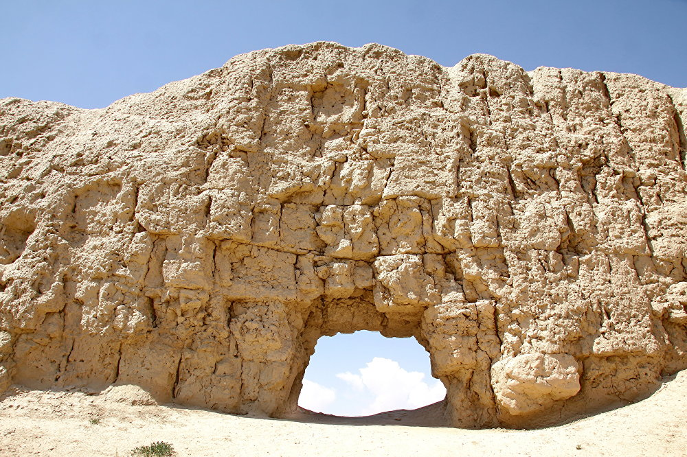

Кошой коргон

Кратко
Кошой-Коргон, (кирг. Кошой Коргон) — руины древнего укрепления, находящиеся близ села Кара-Суу Ат-Башинского района Нарынской области Кыргызстана.
Сооружение с глинобитными стенами, окружающими большую территорию, идентифицировано как «коргон» («крепость», не путать с курганами). Находится к югу от деревни Кара-Суу, к западу от деревни Ат-Баши. Название дано в честь легендарного богатыря Кошоя, одного из полководцев эпоса «Манас». В конце августа 2007 года рядом с руинами был открыт музей[1], однако он редко бывает открыт.
Кошой коргон это город его мощные большие стены служили для защиты. При раскопках находили ножи мечи и стрелы. Стены были в ширину около 7 метров и в высоту 8 метров в основании и были бревна
Как добраться
Информация о дорогах, общественном транспорте и т.д.
Назад к списку